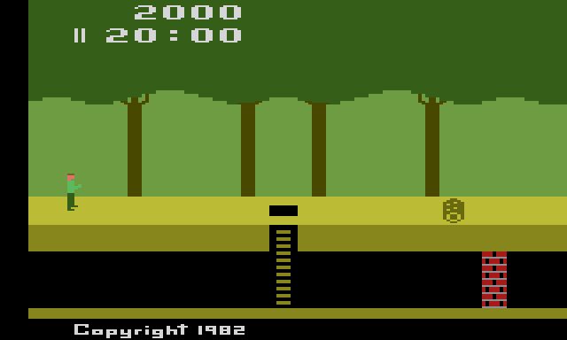
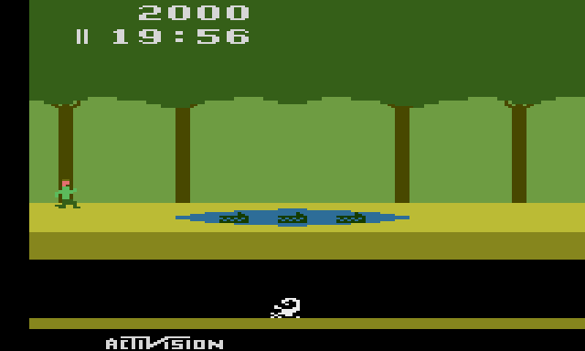
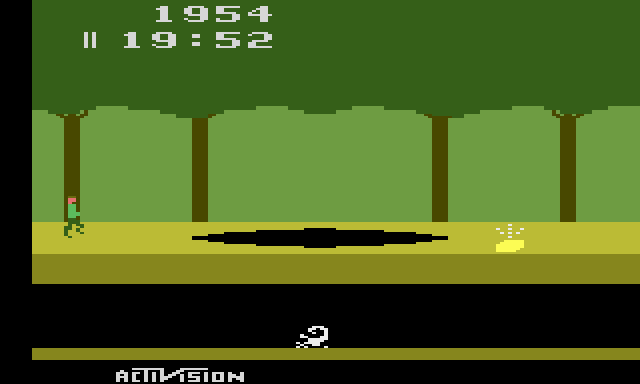
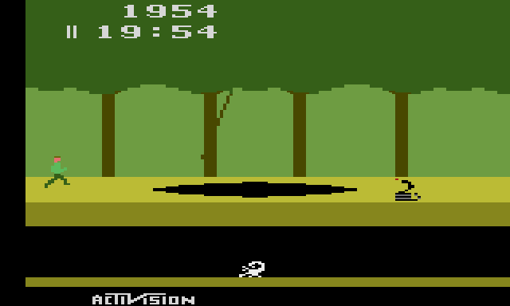
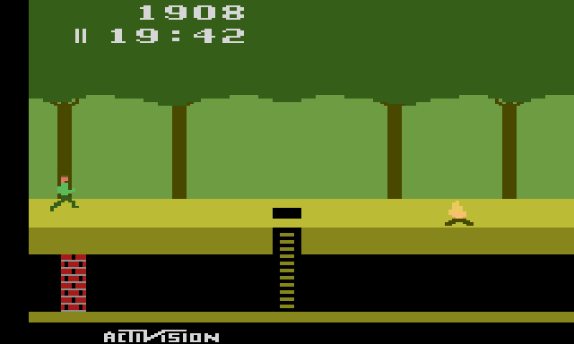

Pitfall!
David Crane's jungle run: twenty minutes, 255 scenes and 32 treasures, from a 4K cartridge. The cartridge's own program, translated into JavaScript one instruction at a time with every cycle counted, so every vine, crocodile and rolling log behaves exactly as on the console.

How to play
Guide Pitfall Harry through the jungle and collect all 32 treasures within twenty minutes. Jump the holes, logs, fire and cobras, swing over the swamps and tar pits on the vines, and hop across the crocodiles' heads. The tunnels underground are a shortcut: every scene you cross down there takes you three along the surface, if you can get past the scorpions and the brick walls.
At the controls
- Run←→ or AD
- Climb↑↓ or WS
- Jump · grab a vineSpace / Z
- Let go of the vine↓
- Game ResetEnter
- Pause · MuteP · M
Gamepads work too: any face button jumps, Start is Game Reset, Back pauses.
Score and time
You start with 2,000 points and three lives, and the clock starts at 20:00 with your first step. Each treasure is worth 2,000 to 5,000 points; falling down a hole costs 100.
The game ends when the clock runs out, when Harry has no lives left, or when the last of the 32 treasures is found.
The same jungle every time
Every game starts in the same scene. Each of the 255 scenes is built from a single number, and walking left or right steps that number backwards or forwards, so the jungle never changes and you can learn the way.




Built from the ROM
This is not an emulator, and not a remake. A translator read the cartridge's 6502 code, using Thomas Jentzsch's annotated disassembly for labels and comments, and wrote out each instruction as a line of JavaScript with its cycle count. The translated game runs on a model of the 2600's TIA and RIOT chips, and a 6502 core runs the real ROM beside it to prove the two match.
- The jungle comes from a "bidirectional" random number generator: it can run backwards as well as forwards, which is what lets Harry walk both ways. The bits of each scene's number pick the ground objects, the kind of scene, the trees and which side the underground wall is on.
- A treasure's value comes from its own type number: two bits, shifted and added to 2,000.
- The Activision copyright at the bottom scrolls away when a game starts, and scrolls back each time Harry loses a life.
- Every game starts from the same seed,
$C4. - Leaving a scene underground runs the generator three times instead of once; that is the whole tunnel shortcut.
Developer pages
- Game only: the player on a page of its own
- Verifying against the ROM: the translator, the 6502 oracle and the comparison scripts